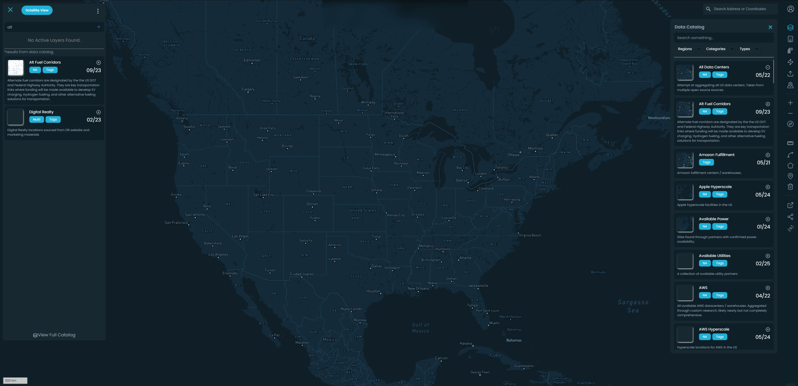
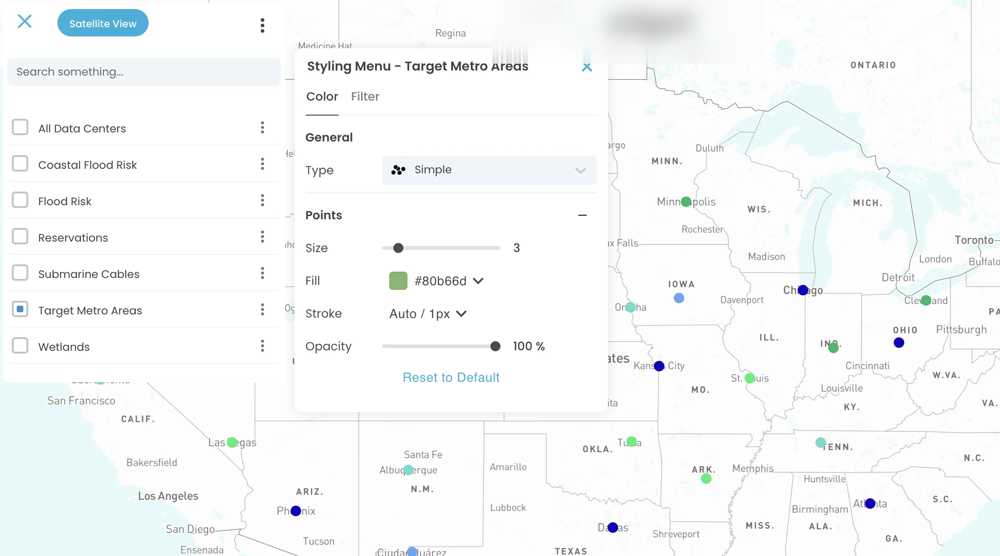
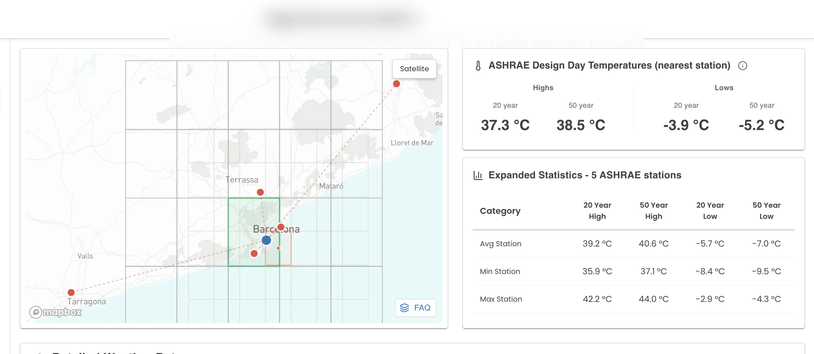
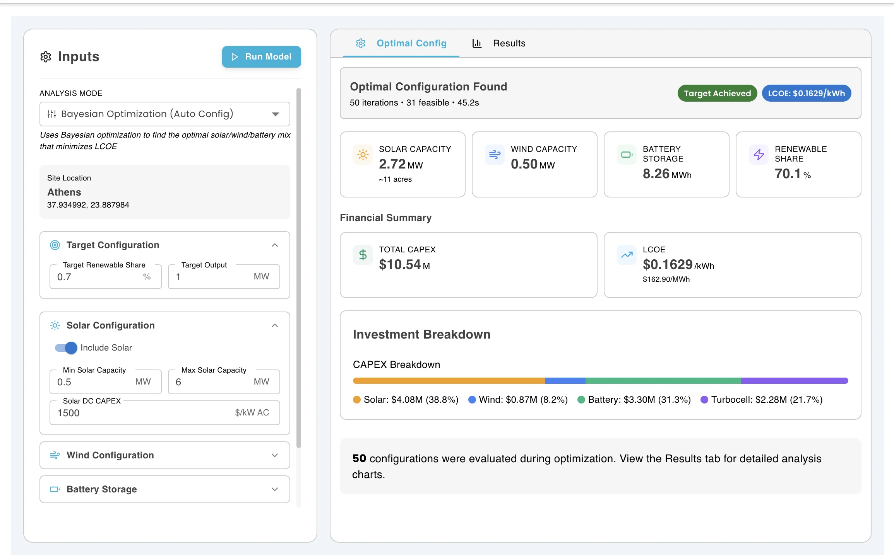
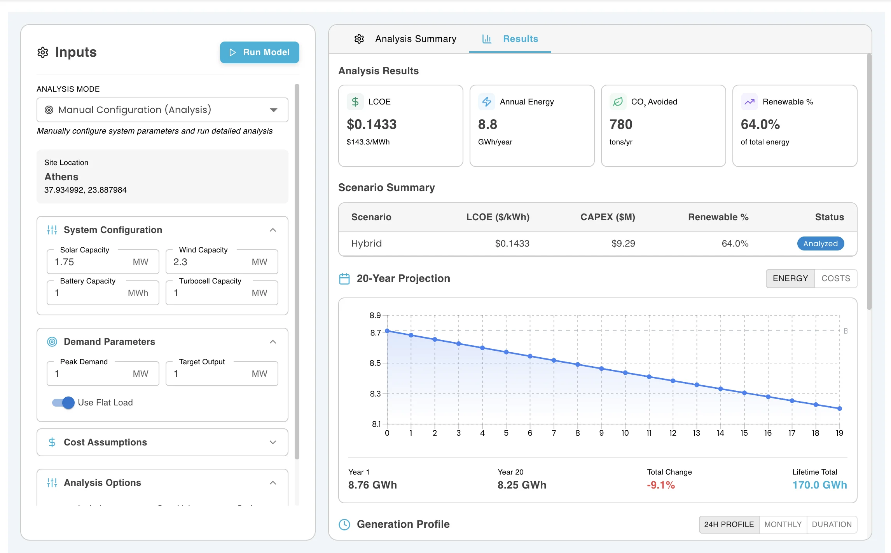
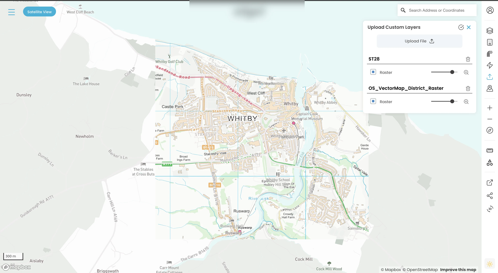

Turning complex infrastructure data into an operational map.
A protected geospatial workspace that connects map layers, site records, climate intelligence, energy analysis, spatial editing, and 3D context in one product.
Make infrastructure decisions possible without stitching together disconnected tools.
Infrastructure teams need more than a map. They need to compare sites, inspect surrounding conditions, overlay environmental and utility information, understand climate constraints, model energy scenarios, and keep operational records connected to geography.
My contribution
Connect the map, the data layer, and the decisions users need to make.
I worked remotely with two other developers and a technical project manager across a long-running product engagement. My contribution covered both product-facing interface work and the services that made the workflows reliable.
Site analysisClimate, equipment, layouts, renewables, district heating, simulations, and site details.
Data workflowsFirebase services, spatial transformations, KMZ/GeoJSON processing, synchronization, and cloud functions.
Product capabilities
One map, many decision-support workflows.
01
Explore infrastructure
Searchable layers and map views help teams move from broad geographic context to a specific site or asset.
02
Style the evidence
Users can change colors, categories, ranges, line styles, opacity, raster treatment, and legends to expose the useful attribute.
03
Analyze the site
Climate, ASHRAE, energy, renewables, equipment, layout, and long-term projections are connected to site context.
04
Edit and share work
Points, lines, polygons, radii, wires, sketches, GeoJSON, and KMZ-derived geometry support user-authored spatial work.
Architecture
A React/Vite workspace backed by Firebase and specialized processing services.
The architecture separates reusable domain access from higher-level orchestration, while Node.js and Python functions handle different synchronization and climate-processing responsibilities.
Frontend
React 18, Vite, Material UI, styled-components, React Router, Mapbox GL, Mapbox Draw, Plotly, Recharts, and Three.js/Threebox.
Firebase Hosting with protected routes, reusable SDK modules, API orchestration, live listeners where needed, and separate function codebases.
Map workspaceLayers, search, edits, sites, and 3D context.
Shared data layerFirestore, Storage, SDK modules, and protected access.
Processing servicesNode.js synchronization plus Python climate and weather workflows.
Product evidence
From global context to site intelligence and energy decisions.
The published screenshots have been anonymized for client confidentiality. They show the product’s map-first progression without exposing the company identity.

Planning workspace. A searchable, layer-driven view for exploring infrastructure context.

Layer styling. Visual treatment can be adapted to the attribute or question being investigated.

Climate intelligence. Site conditions and nearby station data are presented together for early planning decisions.

Renewables optimization. Configurable scenarios become readable decision support with capacity, cost, and renewable-share summaries.

Long-term analysis. Projections, generation profiles, sensitivity, and modeled assumptions stay tied to the site workflow.

Custom data. Uploaded layers and raster sources extend the workspace beyond the built-in catalogue.
Outcome
A shared operational workspace for infrastructure decisions.
The platform brought geographic context, authored spatial work, climate intelligence, energy analysis, 3D context, and operational records into one protected product used by internal marketing and engineering teams and the company’s clients.
Map-firstglobal context carried into site-level decisions
Full stackinterface, data access, processing, and deployment work
Connected workflowslayers, edits, climate, energy, and operational records
The strongest story is not a single dashboard. It is the product decision to keep the map as shared context while progressively revealing the analysis, editing, and operational tools each site requires.Published visuals are anonymized and should receive final client approval before external publication.